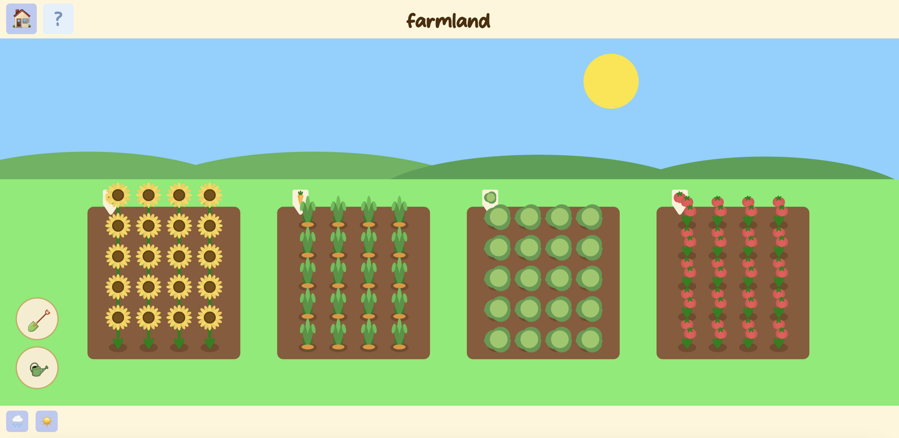
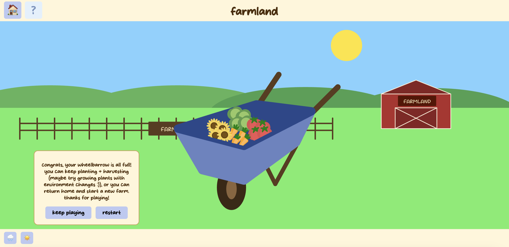
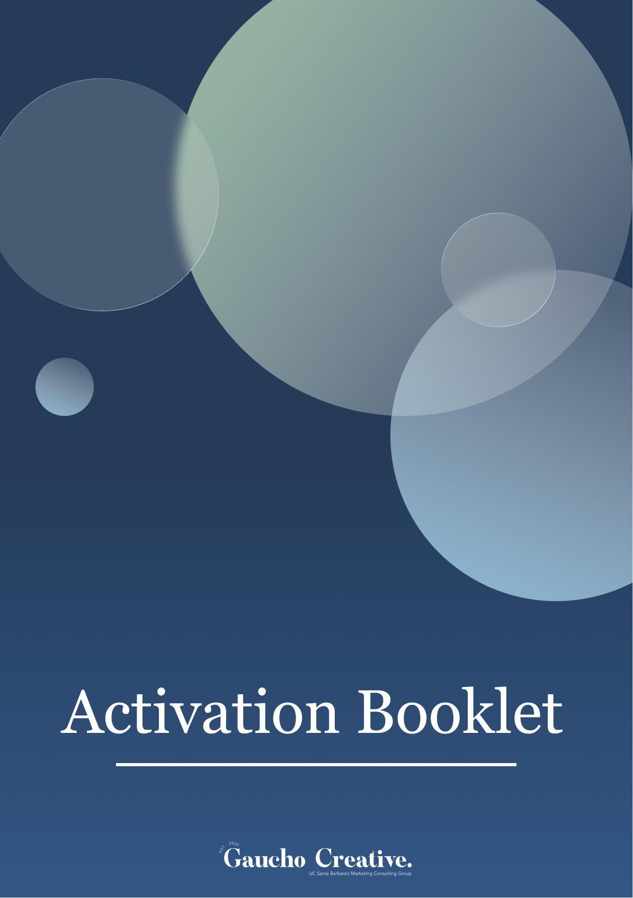
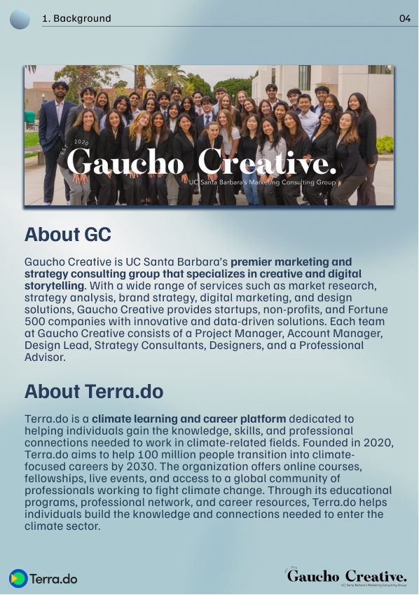
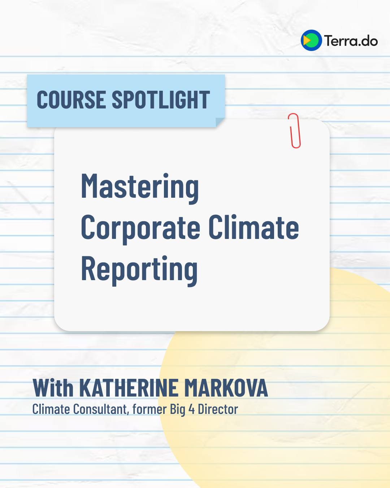
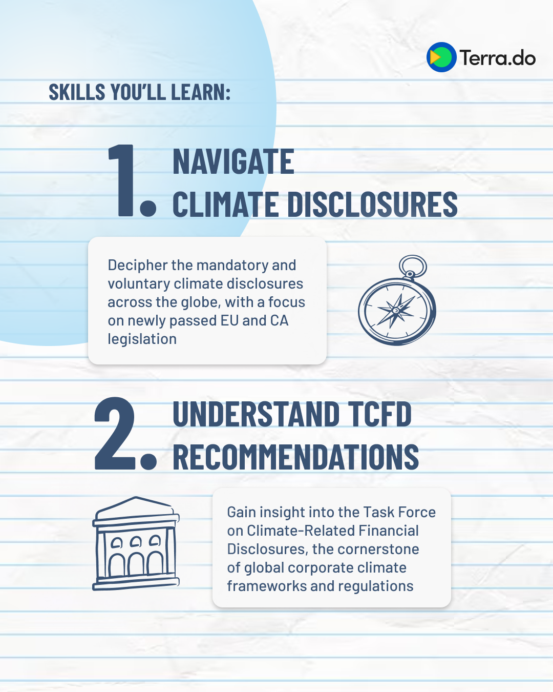

Farmland


Farmland is a simple interactive web-based game that was created to familiarize myself with web narrative and game principles. It was created in Visual Studio Code with HTML, CSS, and Java Script. Most design elements were drafted and modeled in p5.js. I designed almost all the visual features from simple js shapes to implement a tone of simplicity and reminders of childhood. The general aesthetic goals for this game was to suggest joy, calmness, and playfulness.
Gaucho Creative x Terra.do




These are some final deliverables for our consulting project with our client, Terra.do. Our project consisted of two informational booklets with research and suggestions, as well as a series of social media post ideas. As a designer for Gaucho Creative, I designed these booklets, and created many of the social media posts. Because Terra.do is an environmental company, I focused on a light, earthy color scheme and aesthetic simplicity. We were also interested in appealing to a more Gen-Z audience with the social media posts.
Tree of Light

This was a group project created with Cailyn Apistar, Irene Chong, Robert Giron, and Alisa Moyse. This was a very collaborative project, but I was most involved with ideation, prototyping, and some TouchDesigner editing. This was prototyped in p5.js and transitioned into TouchDesigner for a more advanced concept using an L-System, camera, and microphone to track audience movement and volume. Our goal was to explore ideas of maturing and growing into adulthood through an optimistic lens. This art piece embraces light and growth as the viewers get louder and closer to the piece to celebrate emotional closeness and authenticity.